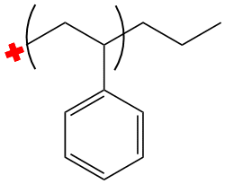
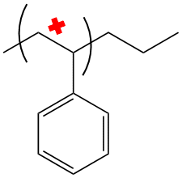
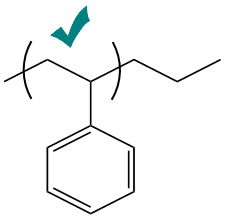
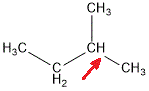
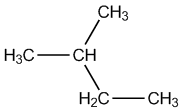

Frequently Asked Questions
Anim pariatur cliche reprehenderit,
enim eiusmod high life accusamus terry richardson ad squid. 3
wolf moon officia aute, non cupidatat skateboard dolor brunch.
Food truck quinoa nesciunt laborum eiusmod. Brunch 3 wolf moon
tempor, sunt aliqua put a bird on it squid single-origin coffee
nulla assumenda shoreditch et. Nihil anim keffiyeh helvetica,
craft beer labore wes anderson cred nesciunt sapiente ea
proident. Ad vegan excepteur butcher vice lomo. Leggings occaecat
craft beer farm-to-table, raw denim aesthetic synth nesciunt you
probably haven't heard of them accusamus labore sustainable VHS.
Anim pariatur cliche reprehenderit, enim eiusmod high life
accusamus terry richardson ad squid. 3 wolf moon officia aute,
non cupidatat skateboard dolor brunch. Food truck quinoa nesciunt
laborum eiusmod. Brunch 3 wolf moon tempor, sunt aliqua put a
bird on it squid single-origin coffee nulla assumenda shoreditch
et. Nihil anim keffiyeh helvetica, craft beer labore wes anderson
cred nesciunt sapiente ea proident. Ad vegan excepteur butcher
vice lomo. Leggings occaecat craft beer farm-to-table, raw denim
aesthetic synth nesciunt you probably haven't heard of them
accusamus labore sustainable VHS.
| Hi | This is a new |
| Whoa | What's up |
Why does P-OSRA return garbage when
I give it an image file?
There are several reasons why P-OSRA may have failed to return the proper output. Most commonly, it is one of the following problems:
- You drew one of the braces intersecting the very end of a bond
- The braces are, for some reason, offset
- The image is too 'grainy' or 'blurry'
- Other formatting issues (see third row for one example)
You can see pictures of both the issues and the remedies for these problems below.
| Common Problems and Resolutions | ||
|---|---|---|
| Here we see that one of the braces intersects the very end of one of the bonds. This is non-ideal. |  |  |
| Here we have the braces offset. Sometimes this will not be as obvious. Check your images carefully! |  |  |
| Here we see two problems. The first problem is the blurriness of the first image; the second problem is the abnormally large whitespace between the marked methine group and attached methyl group. The image on the right resolves both issues. |  |  |
Anim pariatur cliche reprehenderit,
enim eiusmod high life accusamus terry richardson ad squid. 3
wolf moon officia aute, non cupidatat skateboard dolor brunch.
Food truck quinoa nesciunt laborum eiusmod. Brunch 3 wolf moon
tempor, sunt aliqua put a bird on it squid single-origin coffee
nulla assumenda shoreditch et. Nihil anim keffiyeh helvetica,
craft beer labore wes anderson cred nesciunt sapiente ea
proident. Ad vegan excepteur butcher vice lomo. Leggings occaecat
craft beer farm-to-table, raw denim aesthetic synth nesciunt you
probably haven't heard of them accusamus labore sustainable VHS.
Still confused? Send us a
message.